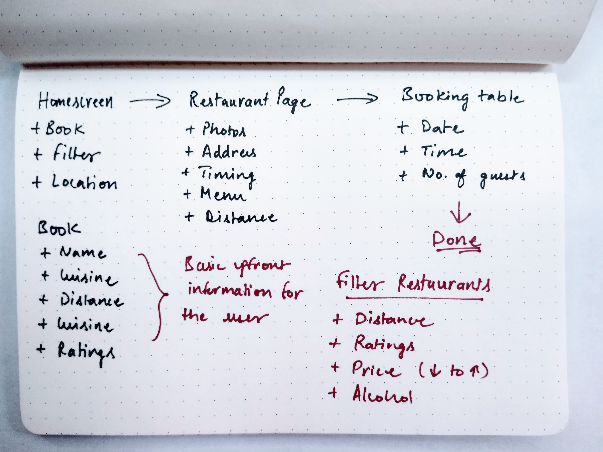
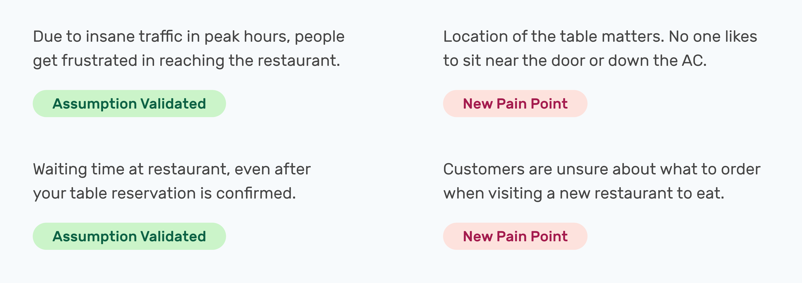
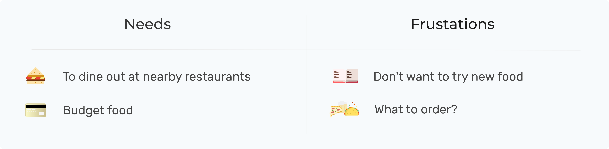
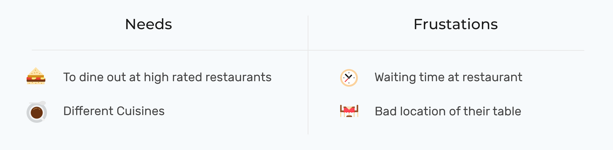
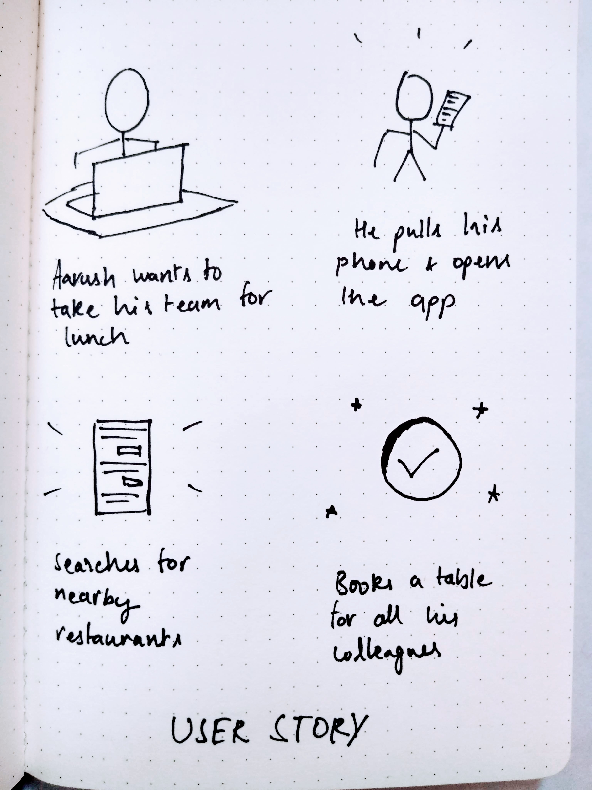
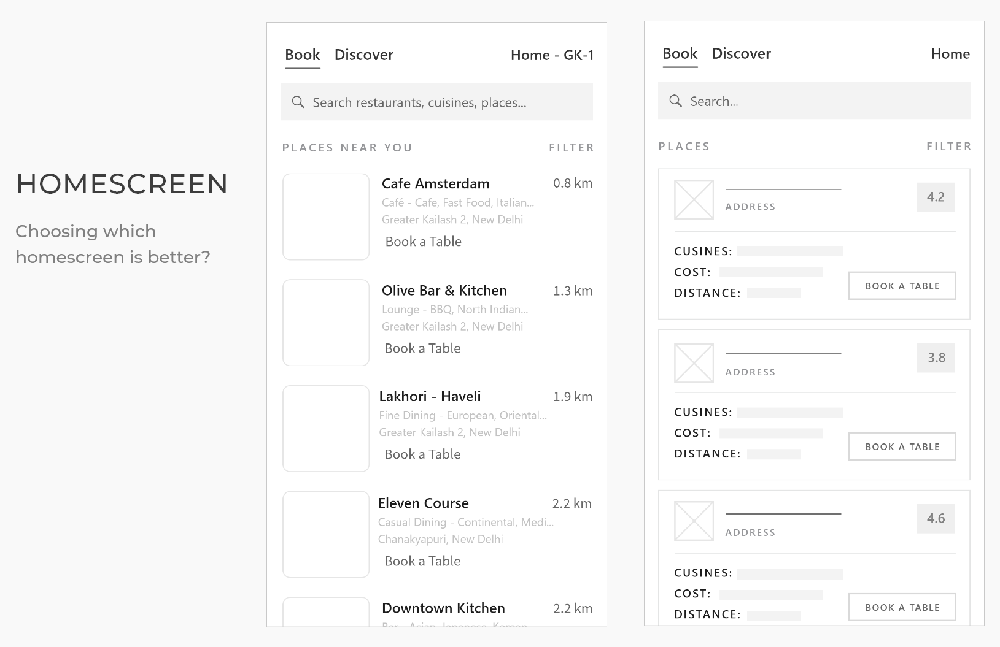
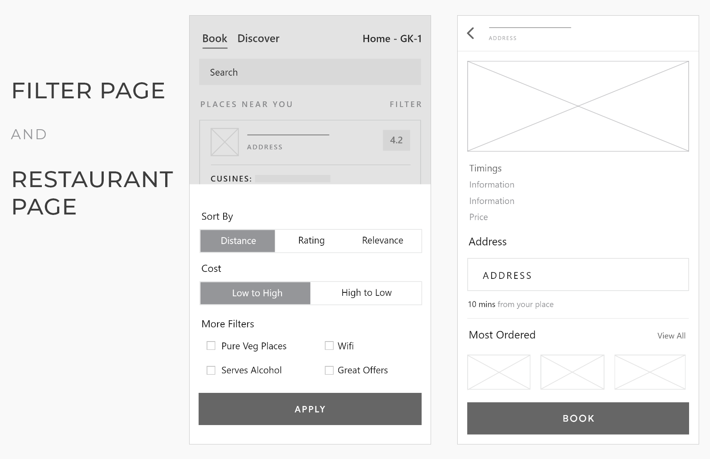
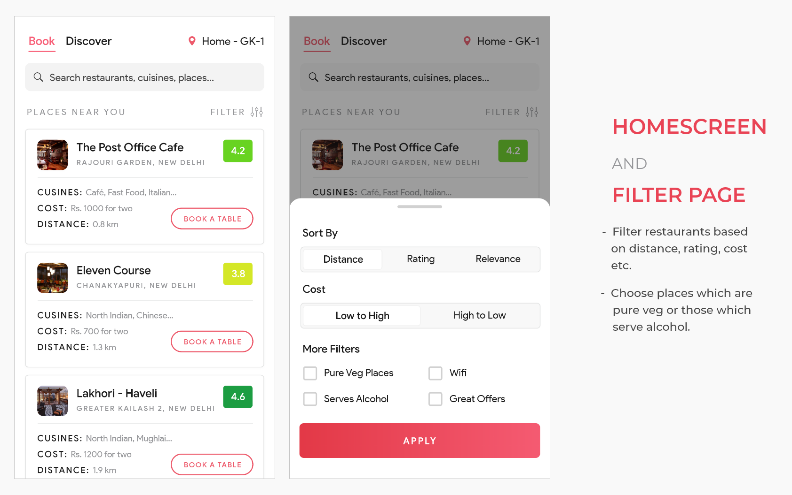
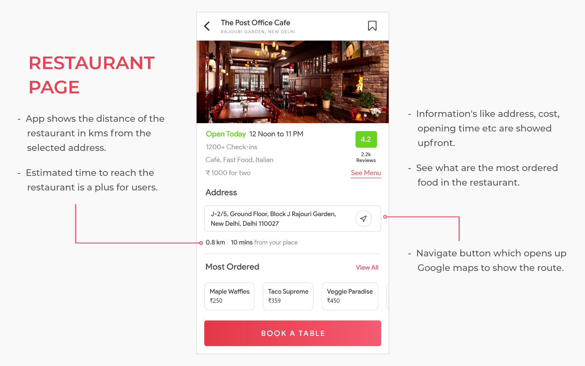
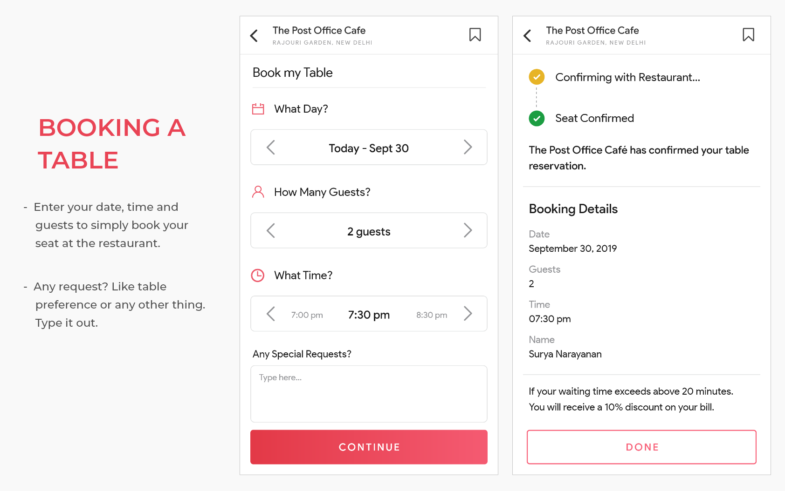

The Task
Design an app which allows users to book a table at a restaurant in a seamless and convenient way. For this project I highly focused on finding insights about the user and their pain points to design the best solution accordingly.
Time Period: 3 Days
Research
Exploring user behaviour
Starting up this design project, I made some basic assumptions which came in my mind about the user —
-
1. Goes out for lunch or dinner twice a week.
-
2. Is generally with the team members or partner.
-
3. Enjoys trying out new restaurants and different cuisines.
-
4. Mostly goes at the prime time of the day.
-
5. Chooses to drive/uber/ola to reach the restaurant.
-
6. Checks out reviews, photos and the menu before choosing the restaurant.
Pain Points
1. Travel time - it often takes about 1 hour to travel to a restaurant due to traffic, and this is often a discouragement for groups to go out.
2. Waiting time - on some occasions and weekends restaurants usually have long queues and waiting time > 20 mins due to lot of customers.
Keeping these assumptions in my mind, I grabbed my notebook and started sketching some user flows and rough wireframes.
After this small sketching exercise, I felt I need some more substantial data to validate my assumptions about user needs and pain points - which will help me gain some more deeper insights. Following a more empathetic approach, I created a Google form and shared it to my friends who eat and try diverse cuisines every week at restaurants.
More than 30 people filled it, and this gave me some additional clarity.
Some key insights from the survey -
1. Most important factor in choosing the restaurant is the rating over photos, price, cuisine etc. While other information also does matter, but having a higher rating is what people prefer in choosing the restaurant. If the ratings are low and reviews are average. Most likely my friends will not choose going to that restaurant.
2. Location of the restaurant also got a lot of response in the survey. Like sometimes someone might be at a new place, e.g - meeting a client. Since they won't be familiar with the surroundings and also don't want to travel longer distances to eat. Being able to see all the near-by restaurants according to their cuisine preference is a big help for them.
"Location has to be convenient to where I am currently at."
3. Customers also care a lot about where the table is located at the restaurant. Some of the bad locations I got in my mind are - near the door, down the air conditioner, next to the bathroom or kitchen.
4. When choosing a new restaurant many times customers are unsure about what to eat there and order something which doesn't tastes that good. If users can see what are the most ordered foods in the restaurant, it will surely help them to make a better decision in ordering the food.
User Persona
Validating the assumptions helped me come up with two main types of user groups which could benefit from such an app.
1. Aarush is 28 years old. Works at a startup. Takes his team members for lunch every week. They try out different near by restaurants and cuisines every other time when they visit.
2. Archit is 21 years old college graduate. Currently working at a tech company. He always initiates plans to go out for dinner or drinks, and makes reservations for everyone. He likes to try diverse cuisines.
A basic storyboard, I sketched to relate the user persona.
After this I opened up Figma and started to create low-fidelity wireframes by putting all the new information I got from my survey.
Low Fidelity Mockups
With the help of user research and personas, I got the idea of what to design and then I started to create low fidelity wireframes.
I created two design's for the homescreen and ratings having the most priority in using the restaurant, I went with the second option.
Left: Filter Screen, Right: Restaurant Page.
Based on my user insights, I added all the features which helps the user.
Left: Booking a table, Right: Confirmation Page.
Request box which users can use to request their concerns.
High Fidelity Design
Finalizing the design
As most food apps use red as their primary color, I also chose red as the primary color. But generally red is associated with error so I didn't chose dark red. Then I created the high fidelity design.
1. Discovering Restaurants
The homescreen shows all the restaurants based on your filter selected. I prioritised data from the research in making all the design decisions. Each restaurant card shows the most important info - Cuisine, Cost and Distance.
2. Restaurant Page
My survey insights showed that people have a concern on what they should order when visiting a new restaurant. To solve that - the app shows you the most ordered foods with price. This helps the user to make better decision in choosing from the menu.
3. Booking a Table
Other concerns people had were about the location of the table, hygiene etc. A special request box solves that - where users can request few personalized changes to their dining experience.
Prototype
Lessons Learned
What I learned?
1. Making design decisions through user research data ― Researching and collecting insights about the user needs helps in designing better products.
2. Following a design process is necessary. Effective researching before designing digitally helps a lot.
Researching → Creating personas → Building user flows → Wireframing → Prototyping
3. Moving on to designing high fidelity wireframes seems tempting but most of the work happens before that part.
Thanks for reading! Reach out to me on Twitter